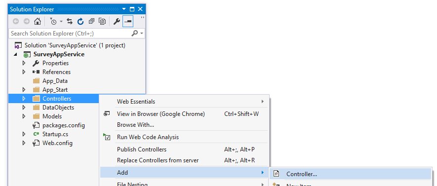
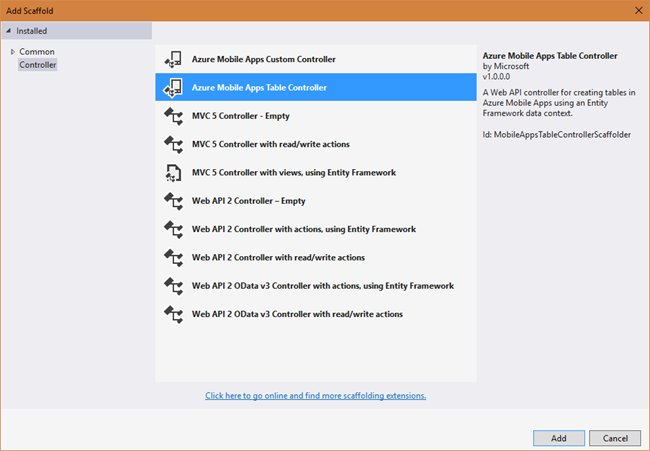
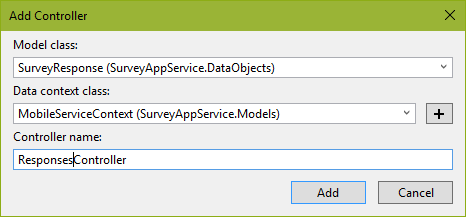

Duration
15 minutes
Goals
In this lab exercise, you will add a new table and enpoint to your mobile application using Visual Studio and ASP.NET. This exercise can only be done if you used ASP.NET to create your back end. If you used the portal to create your service (e.g. Node.js) then you need to use these instructions instead.
Assets
There is a completed version of the exercise in the Exercise 3/Completed folder.
Challenge
You are going to add a new responses table endpoint. This will require that you create a class to represent this both in our database and over the wire when talking to a client. You will add a class named SurveyResponse to provide this support. You will also need to add a new TableController to expose this table over the network. The DTO you will create will have the following properties:
string QuestionIdto hold the question the person responded to.string Nameto hold the person's name.int AnswerIndexto hold the answer the person selected.
You want to store this object in a table named "responses" and have the JSON format for the DTO to be:
{
questionId: "",
name: "",
answer: 0
}
The table controller should expose all the HTTP verbs (GET, POST, PATCH, and DELETE). The default code generated by the Add Controller wizard will generate the proper code for you.
MobileServiceInitializer.Seed method in the Startup.MobileApp.cs file in the App_Start folder.
Steps
Add the response DTO
- Create a new class in the DataObjects folder. Name it "SurveyResponse".
- Have the class derive from
Microsoft.Azure.Mobile.Server.EntityData. - Add the following public properties to the class:
string QuestionIdto hold the question the person responded to.string Nameto hold the person's name.int AnswerIndexto hold the answer the person selected.
Customize the table and wire format
You can use attributes to control how our DTO is mapped to the database table through Entity Framework, and how the object will be represented over the wire. Our goal here is to ensure that the JSON structure looks like the above definition and that we use a table named "responses".
- Add a
[Table("responses")]attribute to your class definition - this will make the name of the table "responses" instead of "SurveyResponse" which would be the default. This attribute is in theSystem.ComponentModel.DataAnnotations.Schemanamespace. - Add
[JsonProperty]attributes to the QuestionId and AnswerIndex properties to change their JSON name to be "questionId" and "answer". This attribute is in theNewtonsoft.Json.
Create the survey response Table Controller
The next step is to expose this DTO through a Table Controller. You can examine the TodoItemController in the Controllers folder which was added by the project template to see the structure, or even modify this one by changing the DTO it exposes, but the easiest way to add a new controller is through a Visual Studio wizard.
- Right-click on the Controllers folder and select Add > Controller. 
- Select the Azure Mobile App Table Controller from the wizard. 
- In the Add Controller dialog:
- Select your
SurveyResponseDTO from the Model class dropdown. - Select the
MobileServiceContextfrom the Data context class dropdown. - Make the name of your new controller "ResponsesController". This will set the endpoint to "responses".

- Select your
- Click Add to add the controller code. This will add a new class into the Controllers folder and also add a new
DbSet<SurveyResponse>property into theMobileServiceContextclass contained in the Models folder. - VS should have opened the new ResponsesController.cs in the Controller folder; if not, go ahead and do that and examine it's contents.
- This is an ASP.NET MVC controller which has a method for each HTTP operation. The prefix on each method name identifies the HTTP verb it responds to.
- The
Initializemethod sets up a Entity FrameworkDbContextwhich is used to access the database and read/write your DTO from it's associated table.
- Since this is an ASP.NET MVC controller, we can use attributes to customize it with ASP.NET attributes. For example, we can rename the methods to match what they do:
- Rename the
PostSurveyResponsemethod toInsertSurveyResponse. Since we no longer have the word "Post" on the method, the controller won't associate this to an HTTP POST request. To correct this, add a[HttpPost]attribute onto the method. - Rename the
PatchSurveyResponsemethod toUpdateSurveyResponseand add a[HttpPatch]attribute onto the method to ensure it responds to an HTTP PATCH request.
- Rename the
Publish the site
Publish the site to Azure (or run it locally).
Check your table endpoint (Optional)
Now that we've setup our table, let's make sure the endpoint is working. You can use any generic REST client you prefer, a nice, free one is Postman which is available as a plug-in for Chrome. You can even hit the endpoint with a regular browser, but since it will be missing the header value, you will get an error back (indicating you are missing the header value).
- Open your REST client.
- The table endpoint will be the URL for your service followed by /tables/responses. So, for example if your site name is castthevote, then the full URL for the table would be: http://castthevote.azurewebsites.net/tables/responses.
- Add a header value with the name ZUMO-API-VERSION and set it's value to "2.0.0".
- Issue a GET request.
- Since the table has no data in it, you should get back an empty JSON array:
[]. - Alternatively, if you are using a Linux/Mac system, or have access to the command-line Curl, you can use it to hit the service and see the response:
$ curl -H ZUMO-API-VERSION:2.0.0 -g http://castthevote.azurewebsites.net/tables/responses % Total % Received % Xferd Average Speed Time Time Time Current Dload Upload Total Spent Left Speed 100 2 100 2 0 0 32 0 --:--:-- --:--:-- --:--:-- 42[]
Summary
In this exercise, you added a new DTO and table controller to your service using Visual Studio.